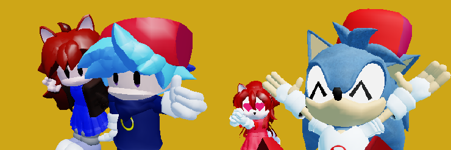
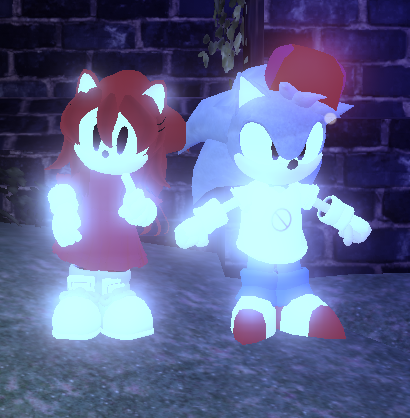
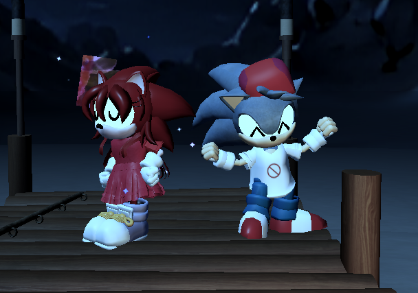

Custom Skins | Outcome Memories

First Rendition of the fnf skins, Instead of a full character replace, this is just boyfriend and girlfriend cosmetics for sonic and amy
Not really updating this version anymore, i've patched amy's hammer but i'm merely focused in V2
You can use this if you prefer bf & gf to be cosmetics instead of replacing sonic and amy, but V2 is the main version of the script
loadstring(game:HttpGet("https://raw.githubusercontent.com/MisterSaiyan/cosas/refs/heads/main/scripts/FNFSkins/V1/fnfskinsv1.lua"))()

